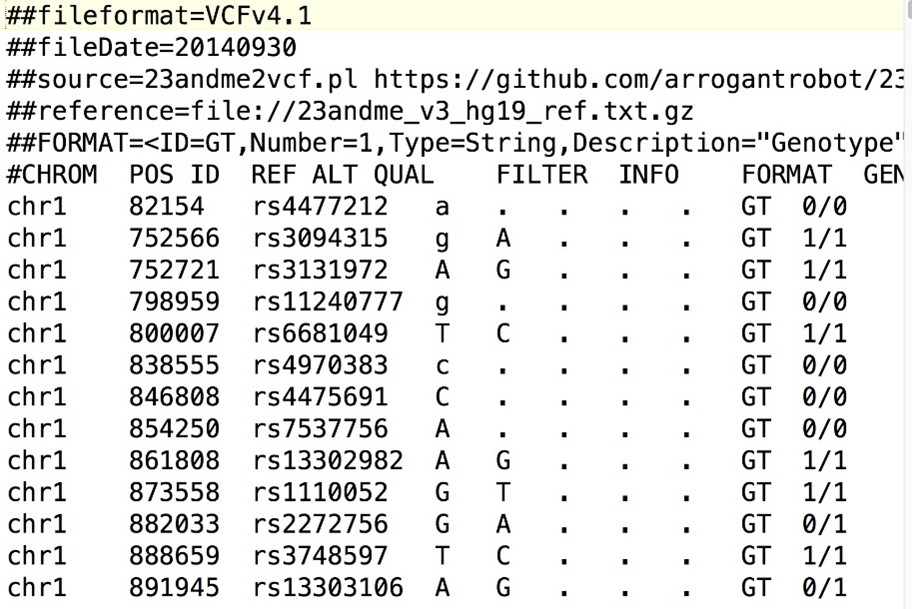

BCFtools V1.23: (
https://www.htslib.org/download/
)
Bcftools is een tool die vooral gebruikt wordt om VCF en BCF bestanden te manipuleren en analyseren.
In het geval van onze pijplijn werken wij met een BAM-bestand als inputbestand en een VCF-bestand als outputbestand.
Hieronder staan de argumenten die wij met BCFtools gaan gebruiken.
Het eerste argument is mpileup: een algoritme om de ‘genotype likelihoods’ (hoe waarschijnlijk een specifiek genotype is gebaseerd op de beschikbare data)
te berekenen en van deze berekeningen een VCF maakt.
De tweak die bij dit argument toe te passen is:
-r, --regions CHR|CHR:POS|CHR:FROM-TO|CHR:FROM-[,…].
Deze tweak zorgt ervoor dat je de tool in specifieke regio’s van het referentie DNA kan laten werken,
wat handig is om specifieker te zoeken naar matches
het tweede argument van deze tool is BCFtools call: BCFtools call is een algoritme dat ‘variant calling’ (het vergelijken van een genoom met een referentiegenoom en de verschillen identificeren) doet.
Met behulp van de eerder berekende genotype likelihoods evalueert dit algoritme de meest waarschijnlijke variant van het genetische materiaal.
de output van bcftools is een VCF-bestand, zie foto hieronder.

{kind=link}